Raw Dataset
Uses the AI4I 2020 predictive maintenance dataset with operating temperatures, torque, rotational speed, tool wear, and five failure flags.
A complete BI pipeline that turns AI4I predictive maintenance records into cleaned data, a PostgreSQL star schema, OLAP summaries, a Streamlit dashboard, and an optional XGBoost failure prediction model.

The project covers the full coursework path: exploration, preprocessing, ETL, dimensional modeling, OLAP analysis, dashboard reporting, and machine learning extension.
Uses the AI4I 2020 predictive maintenance dataset with operating temperatures, torque, rotational speed, tool wear, and five failure flags.
Removes duplicates, fills numeric gaps, filters impossible records, trims extreme outliers, and engineers temperature, power, type, and failure labels.
Loads PostgreSQL staging data into a star schema centered on machine operations with date, product, failure type, and machine condition dimensions.
Exports failure distribution, monthly trend, product quality failure rate, and machine-condition risk summaries as dashboard-ready CSV files.
Trains an optional XGBoost classifier with scaling, SMOTE balancing, ROC-AUC evaluation, feature importance, and SHAP explainability.
The Streamlit dashboard reads generated OLAP CSVs directly, so the BI view can be reviewed without rebuilding PostgreSQL.
Screenshots from the Streamlit dashboard and saved machine learning plots document the main outputs of the project.
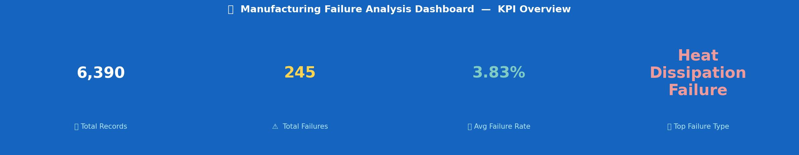
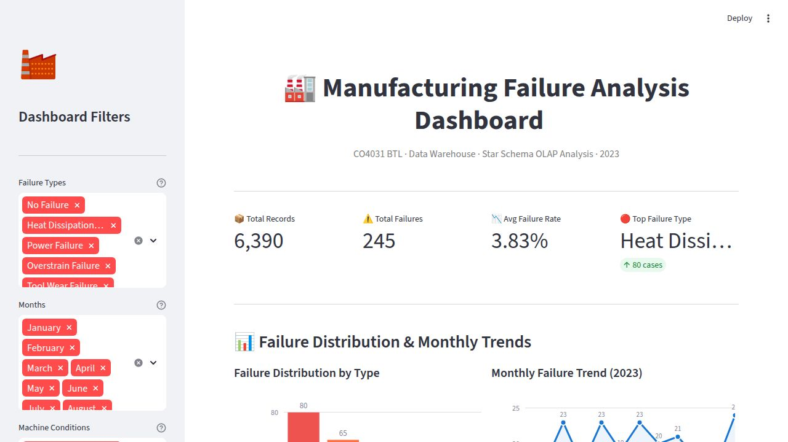
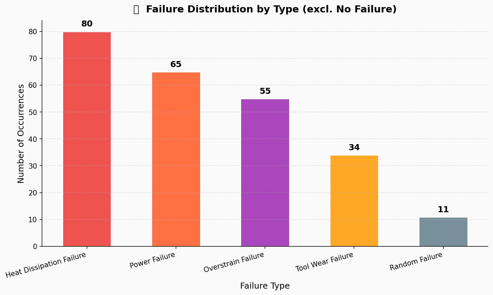
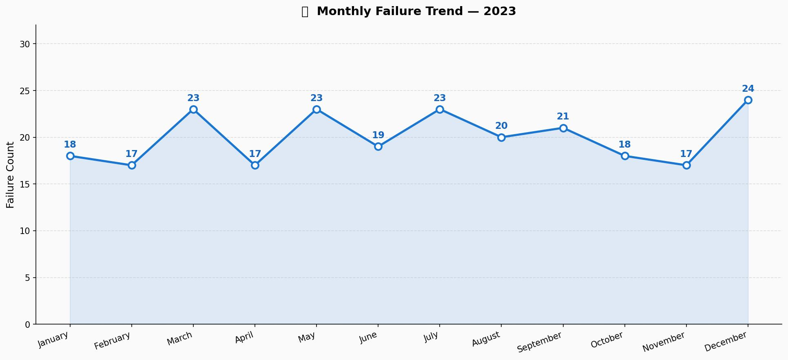
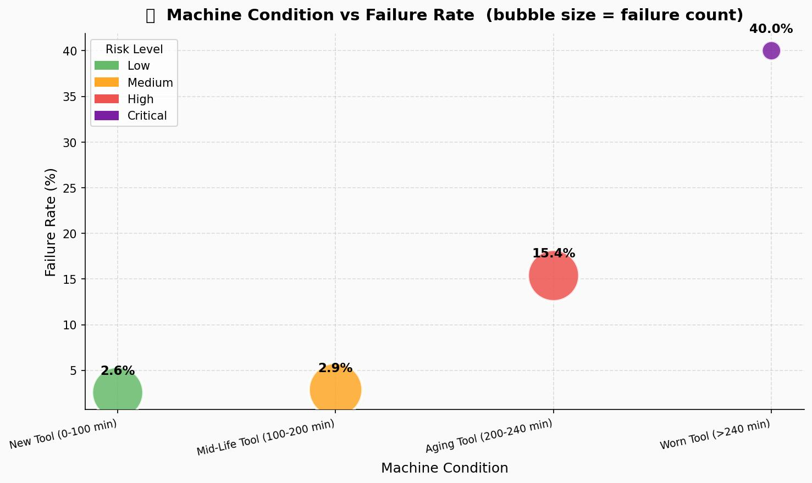
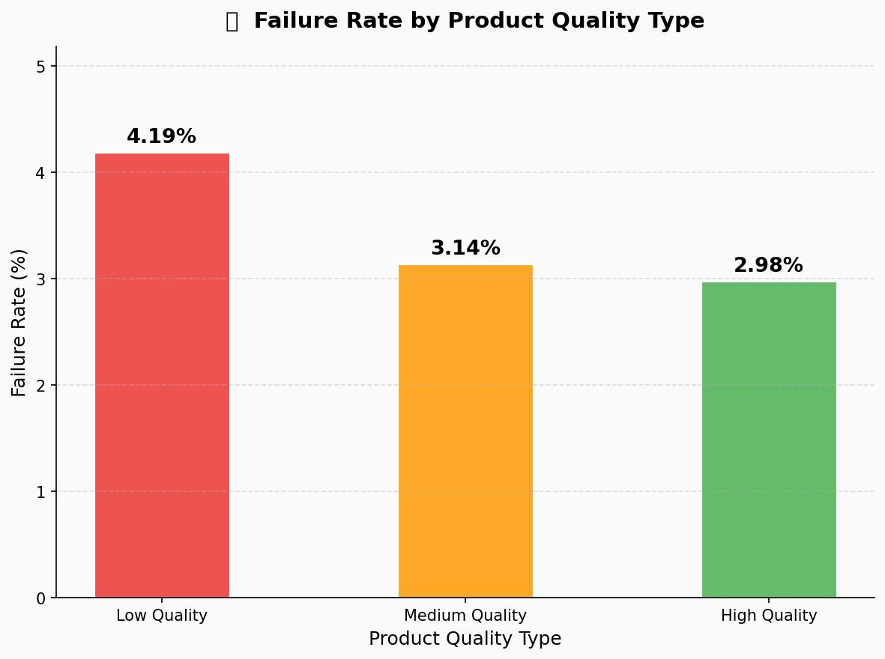
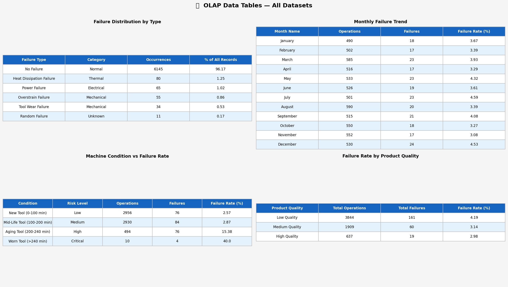
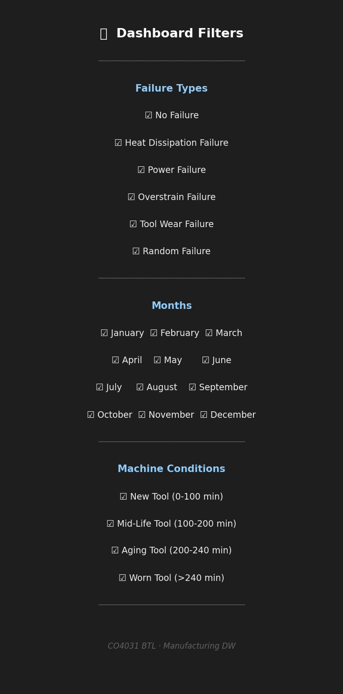
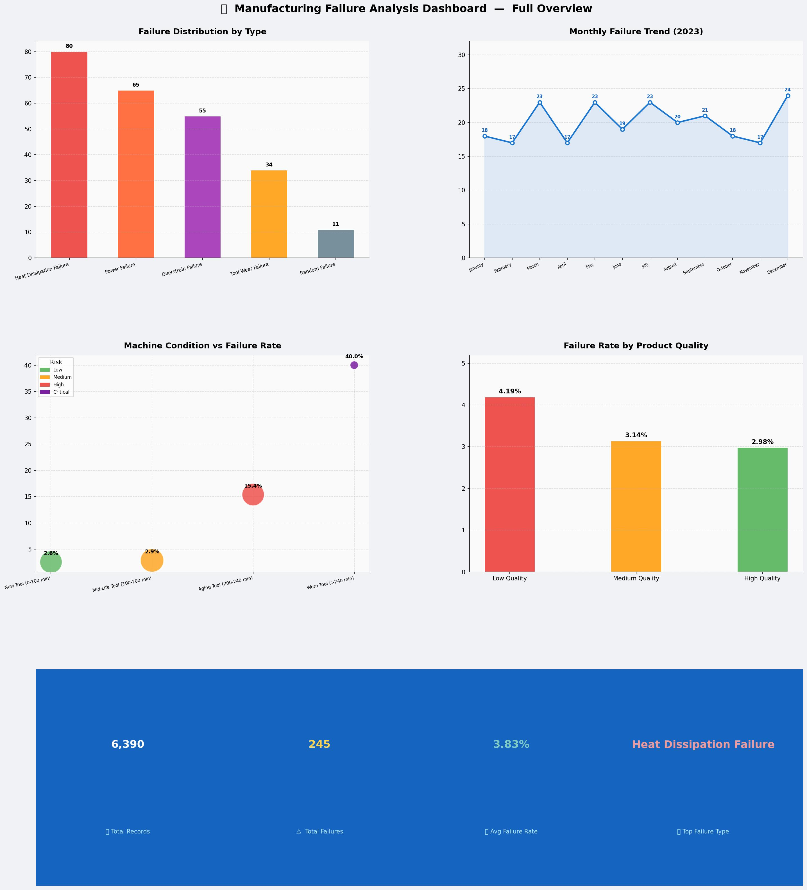
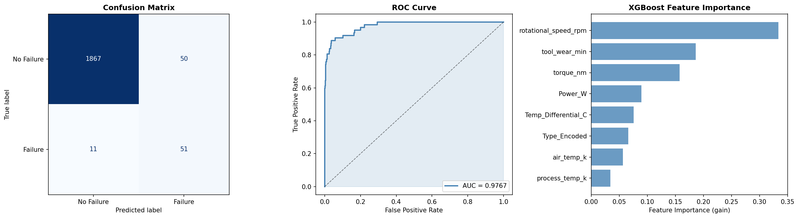
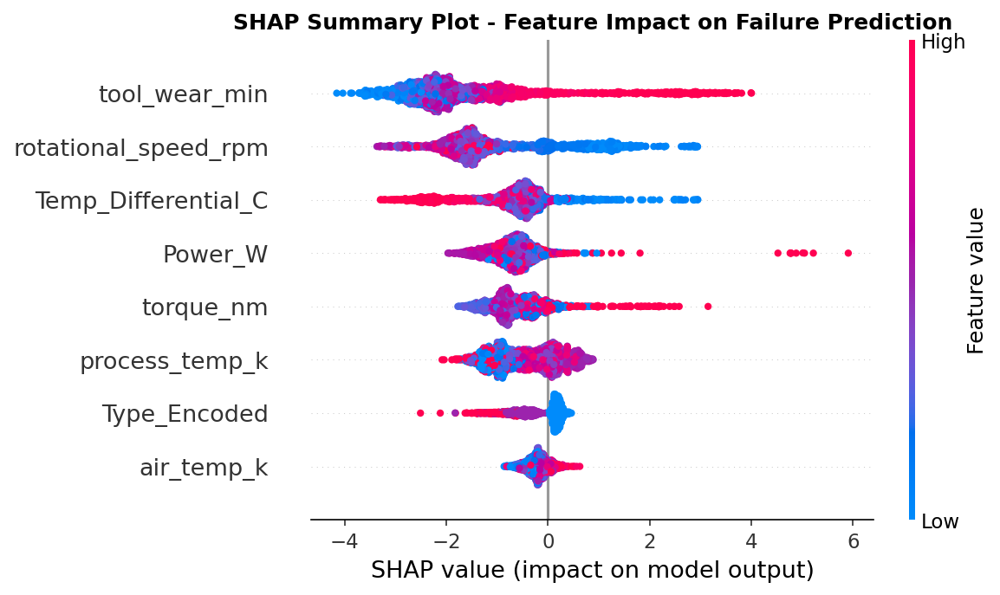
These links point to the coursework repository, local project notes, ETL logic, warehouse schema, OLAP exports, and dashboard entry point.